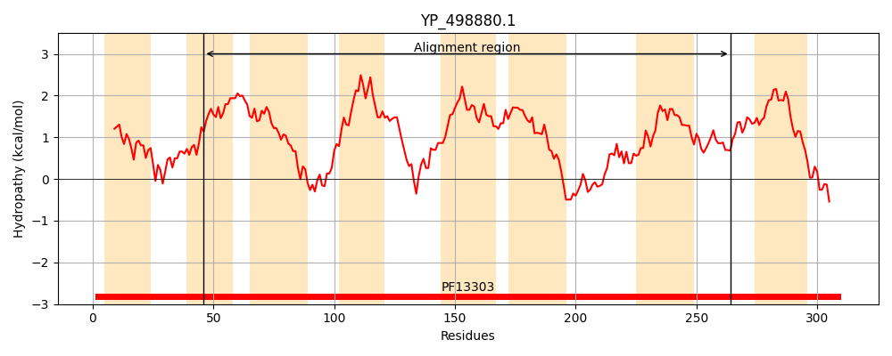
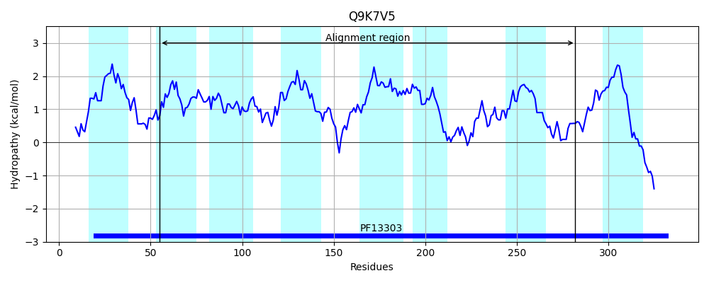
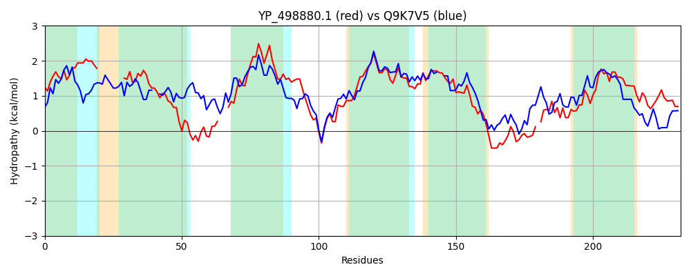

Hit Accession: Q9K7V5
Hit TCID: 9.A.23.1.1
Hit Description: gnl|BL_ORD_ID|18334 gnl|TC-DB|Q9K7V5|9.A.23.1.1 BH3254 protein OS=Bacillus halodurans GN=BH3254 PE=4 SV=1
Mach Len: 232
e:0.000000
Query TMS Count : 8
Hit TMS Count: 8
TMS-Overlap Score: 6.000000
Predicted Substrates:CHEBI:7556;nicotinamide, CHEBI:7559;nicotinic acid
BLAST Alignment:
Score: 149 , Bit scores: 62 bits, E-value: 6.2e-11, Alignment length: 232, Percentage identity: 26
Query: 46 GVAAAGLTALAIGVSPVYAL---------VIAAACGGMDLLPGFFAGYMIGYVMKYTEKYVPDG---VDLIGSIVILAPLARLIAVLLTPVVNSTLIRIGDIIQSSTNTNPIIMGIILGGIITVVGTAPLSSMALTALLGLTGVPMAIGAMAAFSSAFMNGTLFHRLKLGDRKSTIAVSI-EPLSQADIVSANPIPIYITNFFGGAIAGLIIAMSGLINDATGTATPIAGFL 264
GV A L AIGV+ Y L + A G +L G AG + ++ V G +D+I + + + L A + PV+ S + +G I +T PIIMGI++ ++ + TAP+SS AL +L L+G+ A GA +A M G + ++ I + Q + NP+ I G +A L + + N+ G +G +
Sbjct: 55 GVLAMSLMGPAIGVAVAYGLQAPRLVLFSALIAGAAGAEL--GGPAGSFVAALLATEVGKVVAGETKIDIIVTPFVTVIVGFLTAQFIGPVIQSGMSGLGATIMWATEQRPIIMGIVVATLMGLALTAPISSAALAIMLELSGI--AAGAATVGCAAQMVGFAVSSYRENGWAGIFSLGIGTSMLQVPNIVKNPLIILPPTIAGAVLAPLATTVFLMTNNEAGAGMGTSGLV 282 | Protein Hydropathy Plots: |
|---|
|  |  |
Pairwise Alignment-Hydropathy Plot:
|
|---|
|  |